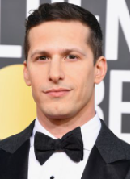

Nascido em Berkeley, Califórnia, com o nome de David A. J. Samberg, mudou seu nome para Andrew David, por conta própria aos cinco anos de idade. É filho de Marjorie (Margie), educadora infantil, e Joe Samberg, fotógrafo. Ele tem duas irmãs mais velhas, Darrow e Johanna,[10] e vem de uma família judaica, apesar de nunca ter se considerado particularmente religioso.
Samberg tem ascendência russa, polonesa e italiana. Sua mãe é filha adotiva do autor e psicólogo do trabalho Alfred J. Marrow. No programa Finding Your Roots with Henry Louis Gates Jr. da PBS, Samberg descobriu que sua avó materna biológica, Ellen Philipsborn, era uma artista judia da Alemanha, que se mudou para os Estados Unidos junto da família nos anos 30, refugiada do regime nazista. Seu avô biológico materno, Salvatore Maida, era um italiano católico, da região da Sicília.
Seu interesse e fascínio por comédia surgiram ainda na infância, quando viu o Saturday Night Live na televisão. Samberg foi colega de classe de Chelsea Peretti no ensino fundamental, com quem contracenaria no futuro, em Brooklyn Nine-Nine. Conheceu Akiva Schaffer e Jorma Taccone, seus futuros parceiros de The Lonely Island, na escola pública de Berkeley, onde estudaram. O trio tinha o hábito de escrever pequenos sketches e apresentá-los para os amigos e colegas de classe. Na época, se interessava por aulas de escrita criativa, que acabaram guiando seu interesse por roteiro e comédia.
Samberg estudou na Universidade da Califórnia em Santa Cruz entre 1996 e 1998,[18] mas transferiu seu curso para a Universidade de Nova Iorque (NYU), onde se formou em Cinema na turma de 2000.